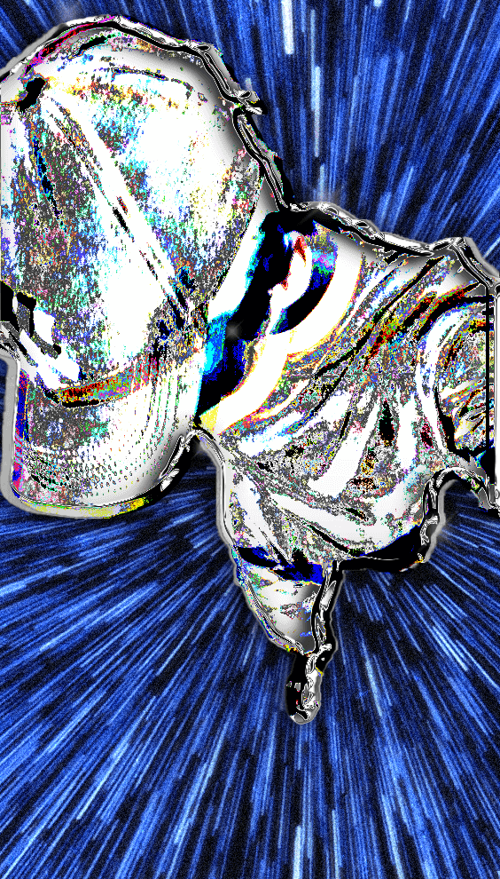

"Warmth - An Ambient Journey"
This is one of my favorite ambient tracks I have produced. I created a very evocative chord progression to set a calming and introspective mood. The track features lush, evolving textures and gentle, layered synths that create a sense of warmth and tranquility. I focused on subtle dynamics and smooth transitions to ensure a soothing listening experience. This piece was inspired by one of my favorite songs in the genre called "Retire" by Alvedon.
"New World" - My Best Drum & Bass Track
Although the melodies in "New World" were still very important, I also focused on finding the right rhythm and samples. The breakbeat that I sampled was from Splice, an extremely popular sample library. I also added different percussions and sound effects to keep the listener engaged throughout the song. Mixing the track posed some challenges, but eventually, I got it just right.
"Pedal" - A Journey Through Emotions
"Pedal" is a deep, intense, and ethereal track that takes the listener on an emotional journey. The slow tempo and rich, textured layers create a profound sense of depth and immersion. I focused on building a strong atmosphere, using smooth transitions and a blend of organic and synthetic sounds to evoke a wide range of emotions. This track was inspired by a night I spent on a desert vacation with my family.
"Air" - Ethereal Soundscapes with Jerk Drum Patterns
"Air" is one of my more unique projects. I continued with the evocative and ethereal melodies, but decided to implement something new with the drums: Jerk drums. Jerk drums are very unique to Caribbean music, mainly Jamaican Dancehall. After trying it out, I found that the fast-paced rhythm complemented the slower and heavier melodies exceptionally well, creating a unique and captivating sound.
"Spaceship" - A Fusion of Hard-Hitting Drums with Smooth Melodies

"Spaceship" is a complete 180 compared to my other soundtracks. It is much more hip hop-esque, using rougher and harder-sounding drums. The name perfectly reflects what you will hear—it feels like you are in a spaceship. It still retains some of my usual techniques and ideas, such as beautifully layered melodies and ethereal sounds with a lot of effects. My inspiration for this song was Bryson Tiller, a music artist whose music shares many of these features.
Interested in Collaborating?
If you’re interested in collaborating or have any questions about my projects, get in touch!